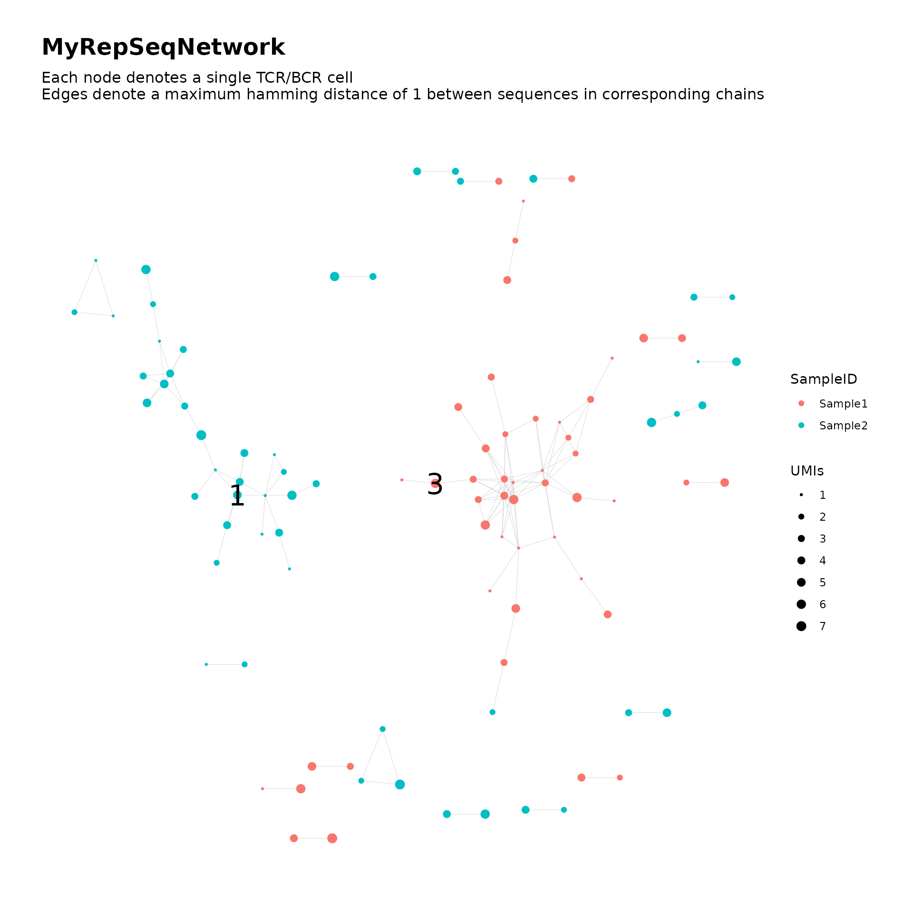

Dual-Chain Network Analysis
dual_chain.RmdFor single-cell data, cell-level network analysis can be performed based on joint similarity in alpha chain sequence and beta chain sequence.
We simulate some toy data to demonstrate the usage.
library(NAIR)
dat <- simulateToyData(chains = 2)
head(dat)
#> AlphaSeq BetaSeq Count UMIs SampleID
#> 1 TTGAGGAAATTCG TTGAGGAAATTCGG 3095 4 Sample1
#> 2 GGAGATGAATCGG GGAGATGAATCGG 3057 6 Sample1
#> 3 GTCGGGTAATTGG GTCGGGTAATTGGG 3575 8 Sample1
#> 4 GCCGGGTAATTCG GCCGGGTAATTCGG 3994 7 Sample1
#> 5 GAAAGAGAATTCG GAAAGAGAATTCGG 3670 3 Sample1
#> 6 AGGTGGGAATTCG AGGTGGGAATTCG 4076 5 Sample1The input data is assumed to have the following format:
- Each row corresponds to a unique cell
- The data contains separate columns for alpha chain sequence and beta chain sequence
Dual-chain network analysis can be performed using the
buildRepSeqNetwork function (or
generateNetworkObjects as a lower-level alternative) by
supplying a length-2 vector to the seq_col argument:
- First entry should reference the column for alpha chain sequence
- Second entry should reference the column for beta chain sequence
# Build network based on joint dual-chain similarity
network <- buildRepSeqNetwork(dat, seq_col = c("AlphaSeq", "BetaSeq"),
count_col = "UMIs",
node_stats = TRUE, stats_to_include = "all",
cluster_stats = TRUE,
color_nodes_by = "SampleID",
size_nodes_by = "UMIs",
node_size_limits = c(0.5, 3),
print_plots = FALSE, output_dir = NULL)
#> Input data contains 200 rows.
#> Removing sequences with length fewer than 3 characters... Done. 200 rows remaining.
#> Computing graph adjacency based on sequences in first chain:
#> Computing network edges based on a max hamming distance of 1... Done.
#> Network contains 200 nodes.
#> Computing graph adjacency based on sequences in second chain:
#> Computing network edges based on a max hamming distance of 1... Done.
#> Network contains 200 nodes.
#> Intersecting the adjacencies from both chains... Done.
#> Building network based on the combined adjacencies... Done.
#> Dropping isolated nodes... Done.
#> Network contains 101 nodes.
#> Computing cluster membership within the network... Done.
#> Computing node-level network statistics... Done.
#> Computing statistics for the 25 clusters in the network... Done.
#> Generating graph plot with nodes colored by SampleID... Done.We print the network graph plot with labels added for the largest two clusters:
addClusterLabels(network$plots$SampleID, network, top_n_clusters = 2, size = 8)
The list returned by buildRepSeqNetwork contains the
following items:
names(network)
#> [1] "igraph" "adjacency_matrix" "adj_mat_a" "adj_mat_b"
#> [5] "node_data" "cluster_data" "plots"Notice that the list contains three adjacency matrices:
adjacency_matrix corresponds to the network based on joint
similarity in both chain sequences, while adj_mat_a
corresponds to the network based only on similarity in the alpha-chain
sequence (and similarly for adj_mat_b).
The cluster-level data contains sequence-based cluster statistics for each of the alpha and beta chain sequences:
head(network$cluster_data)
#> cluster_id node_count mean_A_seq_length mean_B_seq_length mean_degree
#> 1 1 15 12.13 12.87 2.60
#> 2 2 13 13.00 13.08 4.00
#> 3 3 16 13.00 13.94 5.81
#> 4 4 10 12.00 12.00 2.90
#> 5 5 3 13.00 14.00 1.67
#> 6 6 3 13.00 14.00 2.00
#> max_degree A_seq_w_max_degree B_seq_w_max_degree agg_count max_count
#> 1 7 AAAAAAAAATTC AAAAAAAAATTCG 42 6
#> 2 11 GGGGGGGAATTGG GGGGGGGAATTGG 28 6
#> 3 12 GGGGGGGAATTGG GGGGGGGAATTGGG 49 6
#> 4 6 AAAAAGAAATTG AAAAAGAAATTG 39 7
#> 5 2 AGGGGAGAATTGG AGGGGAGAATTGGG 10 5
#> 6 2 AAAAAAGAATTGC AAAAAAGAATTGCG 4 2
#> A_seq_w_max_count B_seq_w_max_count diameter_length global_transitivity
#> 1 AAAAAAAAATTC AAAAAAAAATTC 6 0.2884615
#> 2 GGGGTGGAATTGG GGGGTGGAATTGG 7 0.3802817
#> 3 GGGGAGAAATTGG GGGGAGAAATTGGG 6 0.6328125
#> 4 AAAGAAAAATTG AAAGAAAAATTG 6 0.3750000
#> 5 AGGGGAGAATTGG AGGGGAGAATTGGG 3 0.0000000
#> 6 AGAAAAGAATTGC AGAAAAGAATTGCG 2 1.0000000
#> assortativity edge_density degree_centrality_index closeness_centrality_index
#> 1 -0.16503588 0.1809524 0.3190476 0.4497821
#> 2 -0.15180055 0.2692308 0.3141026 0.4357891
#> 3 -0.08424855 0.3416667 0.3250000 0.4650078
#> 4 -0.33425414 0.3111111 0.3555556 0.4889192
#> 5 -1.00000000 0.6666667 0.3333333 1.0000000
#> 6 NaN 1.0000000 0.0000000 0.0000000
#> eigen_centrality_index eigen_centrality_eigenvalue
#> 1 6.385488e-01 3.680389
#> 2 6.131393e-01 4.419380
#> 3 5.291669e-01 7.257172
#> 4 6.107669e-01 3.750958
#> 5 5.857864e-01 1.414214
#> 6 4.440892e-16 2.000000The remainder of the output and customization follows the general case for the buildRepSeqNetwork function.